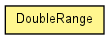

toxi.util.datatypes
Class DoubleRange
java.lang.Object
 toxi.util.datatypes.DoubleRange
toxi.util.datatypes.DoubleRange
public class DoubleRange
- extends java.lang.Object

| Methods inherited from class java.lang.Object |
equals, getClass, hashCode, notify, notifyAll, wait, wait, wait |
min
public double min
max
public double max
currValue
public double currValue
DoubleRange
public DoubleRange()
DoubleRange
public DoubleRange(double min,
double max)
fromSamples
public static DoubleRange fromSamples(java.util.List<java.lang.Double> samples)
adjustCurrentBy
public double adjustCurrentBy(double val)
copy
public DoubleRange copy()
getCurrent
public double getCurrent()
getMedian
public double getMedian()
isValueInRange
public boolean isValueInRange(float val)
pickRandom
public double pickRandom()
seed
public DoubleRange seed(long seed)
setCurrent
public double setCurrent(double val)
setRandom
public DoubleRange setRandom(java.util.Random rnd)
toArray
public java.lang.Double[] toArray(double step)
toString
public java.lang.String toString()
- Overrides:
toString in class java.lang.Object